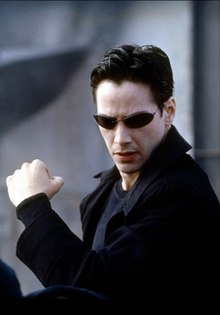
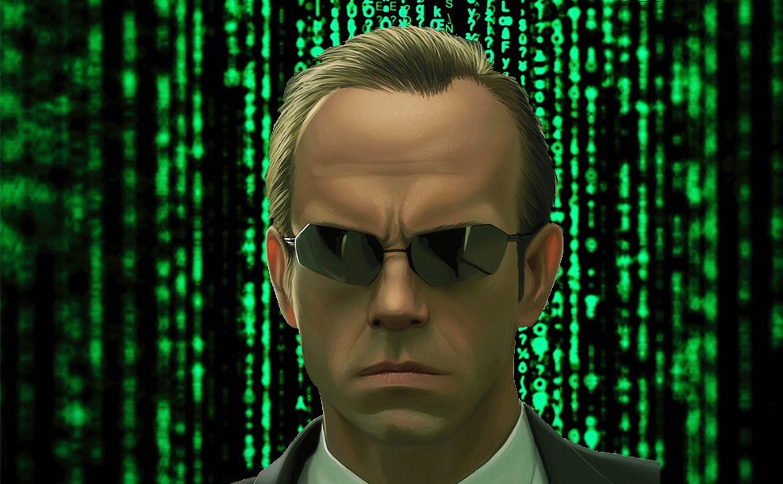
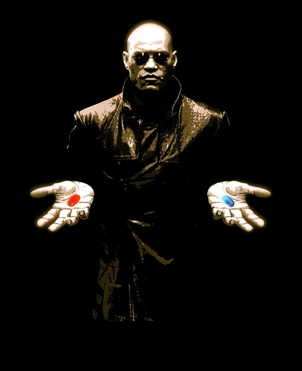
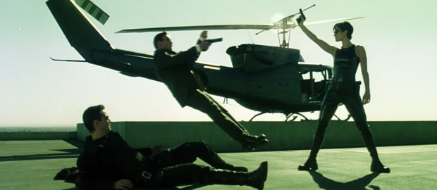
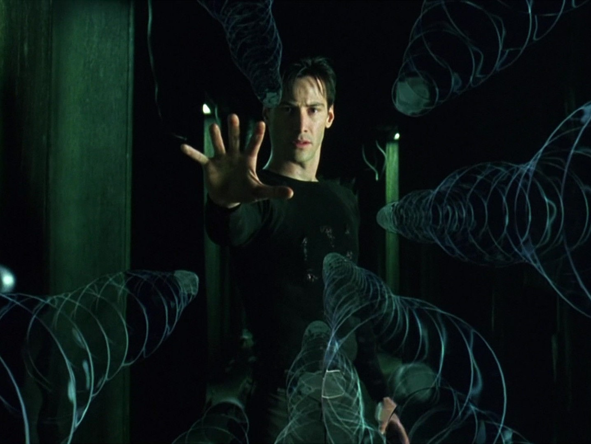

The Matrix. Character description
Thomas A. Anderson was born in Lower Downtown, Capital City, USA on March 11, 1962, according to his criminal record, or September 13, 1971 according to his passport (both seen in the film). His mother was Michelle McGahey (the name of the first film's art director) and his father was John Anderson.  He attended Central West Junior High and Owen Patterson High (named after the film's production designer). In high school, he excelled at science, math and computer courses, and displayed an aptitude for literature and history. Although he had disciplinary troubles when he was thirteen to fourteen years old, Anderson went on to become a respected member of the school community through his involvement in football and hockey. At the start of the series, Neo is one of billions of humans neurally connected to the Matrix, unaware that the world he lives in is a simulated reality. In his normal life, he is a quiet programmer for the "respectable software company" Meta Cortex, while in private, he is a computer hacker who penetrates computer systems illicitly and steals information under his hacker alias "Neo". He also sells illegal untraceable computer systems and hacking programs along with controlling computer viruses stashed on CDs and diskettes. During his time as a hacker, Anderson has learned about something known only as "The Matrix". During the years prior to the events of The Matrix, Neo has spent his time trying to find the one man who he thought could tell him what the Matrix was, a supposed terrorist known only as Morpheus. After an encounter with another hacker, Trinity, Anderson is suddenly contacted by Morpheus via a cell phone mailed to his office, but is almost immediately captured by the virtual reality's Agents, led by Agent Smith.  After refusing to cooperate with the agents, Neo has an electronic bug implanted within his Matrix-simulated body so that his actions can be tracked, and those seeking to make contact from the free world can be traced and destroyed. He is then contacted by Trinity, freed from the bug, and taken to meet Morpheus. Neo is offered a choice to remain in his everyday life and forget about the Matrix or to learn what the Matrix really is. Choosing to learn what the Matrix really is, he takes a drug (commonly called the "red pill")  , which is actually a program designed to disrupt his mind's neural connection to the Matrix and make it easier for his real body to be found and awakened in the real world. He wakes up disoriented and alarmed to find himself naked, weak, and hairless in a pod full of what can be assumed to be an artificial amniotic fluid. He also discovers that he is connected to a series of thick cables, by way of a number of plugs that are grafted to his body, including one plugged directly into the base of his skull, which is later explained as the means through which his mind was connected to the Matrix. Upon his "birthing" into the real world, he is discovered by a machine that grabs him by the neck and removes all of his plugs and cables before flushing him out of his fluid tank down into the cold sewers below the Earth's surface. Neo is rescued by Morpheus, and his body is healed of the effects of his atrophy incurred while inside the pod. Once Neo regains consciousness and is able to walk, Morpheus tells Neo the truth about the Matrix, that it is a simulated world to which humans are connected, "a prison for your mind", as stated by Morpheus, while unknown to them, their bodies are used as a power source for a race of sentient machines that, ironically, mankind created. He also tells Neo about the One, a human with the power to manipulate the Matrix, who has been foretold to end the war between humans and machines, and says that he believes Neo is The One. The next day, Neo begins his "training" and becomes knowledgeable in many forms of combat, as well as vehicle and weapons operations, by having various training programs uploaded directly into his brain. He also receives further instruction from Morpheus on subjects such as "freeing his mind" from the restrictions of the Matrix, essentially overcoming the physics engine the Matrix operates on. He is also made aware of the existence of its agents, programs designed by the machines to maintain order and dominance over the human race, created with abilities such as dodging bullets, running at high speeds, jumping great distances, and physically possessing people in the Matrix. If killed, they simply find a new host to overcome. Neo learns that the Agents seek to hack into Morpheus's brain in order to force him to tell them the access codes to the mainframe computer within humanity's last refuge, the city of Zion. After refusing to sacrifice Morpheus to prevent this, Neo decides to jack in and attack the building where he is being held. He and Trinity proceed to fight their way to the roof level of the building, where they are confronted by agent Jones. Neo unloads two entire magazines on Jones as he dodges each bullet effortlessly. When Jones returns fire, Neo proves capable of dodging bullets himself, fluidly moving in a way only an agent was thought to be capable of, although he is not yet as fast as them, as his leg is grazed by a bullet. Trinity then shoots Jones at point-blank range. Using an armed chopper, Neo and Trinity successfully rescue Morpheus. As Neo has just successfully rescued comrades from a building protected by heavily armed guards and agents (thought to be an unprecedented feat), Tank and Morpheus both believe that Neo is indeed the One. Neo tries to tell Morpheus what the Oracle told him, but Morpheus explains that she merely told Neo what he needed to hear; had he believed himself to be the One, he would likely not have attempted the rescue, which was a necessary step to his emergence as the One. Reaching the landline phone, Morpheus and Trinity return to the real world, but Neo is trapped by agent Smith. Trinity admonishes Neo to run, but he stands his ground, having begun to believe that he may be the One. Neo and Smith draw guns and fire them empty, but are able to effortlessly dodge each other's fire. Neo skillfully engages Smith in hand-to-hand combat, almost seeming to be Smith's equal. In the end, Neo is briefly incapacitated and held by Smith as a subway train approaches, but at the last minute, he is able to get free and backflip up onto the platform, leaving Smith to be run over. However, the agent possesses the body of the conductor and emerges from the train. Neo, realizing that the agents' ability to possess other bodies makes this a fight he cannot win, flees the subway station.  Pursued by Smith and his fellow agents, Neo is able to evade them and reach the location of the landline phone, just to be ambushed and fatally shot in the chest by Smith. Trinity, seeing Neo die in the real world while his mind is still in the Matrix, tells his evidently lifeless body that the Oracle had foretold that she would fall in love with the One. When kissed by Trinity, Neo comes back to life, finally fully emerging as the One. When the agents try to kill him again, Neo simply raises his hand, and the bullets freeze in mid-air, then drop harmlessly to the ground. It is then shown that he is able to perceive, interpret, and alter the computer code of the Matrix. Completely believing in his new-found powers, he effortlessly fends off agent Smith before forcing himself into the agent's body and destroying it from within. The other two agents quickly flee. Neo is then seen leaving a message for the machines via phone, a warning that he plans to oppose the machines by freeing as many human minds as possible. He then hangs up and flies into the sky, now having completely made his final metamorphosis into becoming the One.